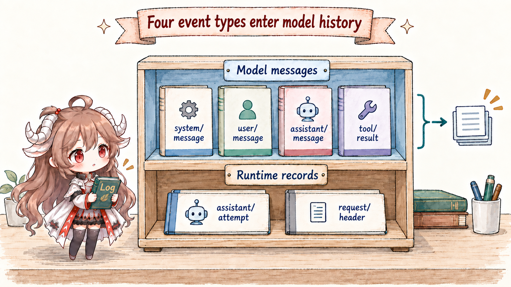
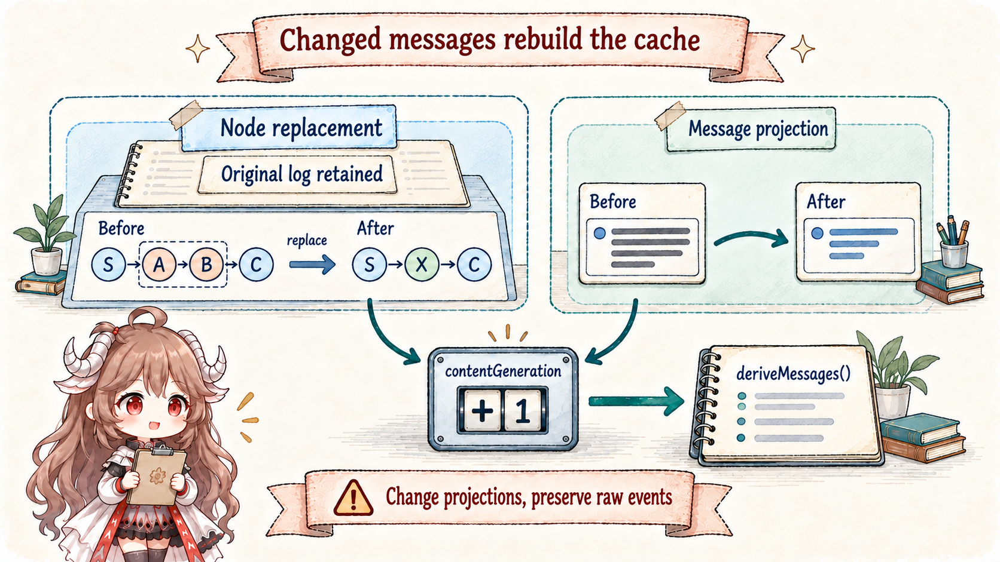
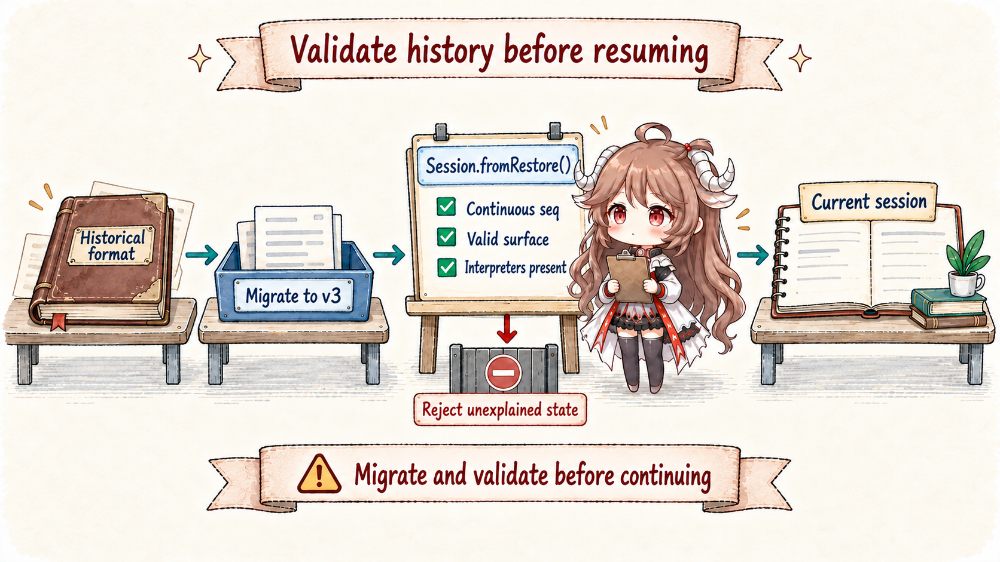

Many agent systems begin with messages.push(). Tool state, tokens, approvals, retries, and UI progress then accumulate in adjacent maps; recovery eventually guesses which maps can be reconstructed from messages. DSH reverses the ownership: runtime facts enter an append-only log, and model messages are one projection over it.
One turn serves three consumers with different needs. The model needs canonical system, user, assistant, and tool messages. A human timeline needs the original conversation and tool progress. Recovery also needs turn/step boundaries, request headers, errors, and lineage. Sharing one array guarantees that some consumer eventually receives too much or too little.
Reading contract.After this chapter, you should be able to explain what append() guarantees before and after commit; why four message event types require surfaceOp; why replace shadows the model surface without deleting raw history; why a human transcript must not read the current surface directly; and how unknown events, sourceEventSeqs, and session/end-seed make restoration fail more safely.
Evidence boundary.This chapter is pinned to ddefc45. The current logical format is v3. Session owns append, surface validation, and seed admission; persistence, format migration, and plugin message projections have separate interfaces. The chapter distinguishes an in-memory commit, durable storage, and live stream frames: none automatically proves the other two.
1. Session is an append-only fact source, not an editable transcript
1.1 append snapshots, validates, then commits once
Session.append() never stores a caller's mutable object reference directly. It creates lossless JSON snapshots of data, surface metadata, and sourceEventSeqs; assigns continuous seq and time to a frozen candidate; then validates markers, provenance, and replacement coverage. SurfaceManager validates and plans the transition before the event enters the private log; the surface then advances over admitted events. A failed validation cannot leave half an event or half a replacement behind.
Events admitted by append() and their nested messages are deeply frozen. A caller cannot mutate a content block later and silently change model history. A change requires an explicit replacement or a logged message-projection decision handled by a registered interpreter. The former session.events interface is gone; snapshotEvents() still returns stable snapshots but is deprecated too. New production logic should consume query or projection interfaces rather than repeatedly scan the whole log.
This is a call-shape example: message and summary are constructed messages, endpoints are current-node SessionSeq values, and shadowedSeqs includes every replaced node.
session.append('user/message', message, {
surfaceOp: 'append',
})
session.append('user/message', summary, {
surfaceOp: { op: 'replace', startSeq, endSeq },
sourceEventSeqs: shadowedSeqs,
})1.2 Notification follows commit, and observer failures are contained
An attached Session emits session/event only after commit. Listener failures are contained independently: a telemetry or UI exception cannot remove an accepted event or prevent other observers from seeing it. Reentrant append is rejected so an observer cannot recursively disturb event ordering on the same notification stack.
A persistence listener may perform write-behind, but a producer that requires durability must explicitly await ctx.sessions.flush(session). Part IV covers that barrier. Session append owns the atomic in-memory fact; flush waits for external mirrors.
2. The event vocabulary separates content, execution, and diagnostics
2.1 Four message types enter the surface; streams settle separately

SurfaceEventType includes system/message, user/message, assistant/message, and tool/result. All four require surfaceOp. The system prompt is recoverable model history too: the loop writes its first system node before the first user message. request/header retains call configuration, tool schemas, and adapter defaults; it must no longer carry header.system.
While an answer streams, the interface consumes live agent/assistant-stream frames. The log no longer appends one event per chunk. At settlement, successful output becomes assistant/message; a failed or retried attempt that committed no message becomes assistant/attempt. Both embed a stream preserving timing and delta boundaries. Cancellation may commit the delivered text or reasoning prefix with interrupted: true, excluding tool calls that were never dispatched.
Text already visible in the interface is not necessarily durable. Live frames serve presentation; a settlement event enters Session and still needs a persistence barrier. Attempts, turn/step boundaries, tool/call, and request records do not directly become messages. A recorded tool call marks entry into dispatch, not proof of success or an external effect.
A simplified failed-then-successful request retry makes the three channels distinct:
Live display: attempt 1 frames → attempt 2 frames
Session: assistant/attempt { stream: … }
assistant/message { message: …, stream: … }
Model history: only the committed assistant/message enters
Persistence: flush waits for those Session records to be written2.2 sourceEventSeqs connects a product to its inputs
system/message, user/message, and tool/result can cite source events through sourceEventSeqs. A compaction replacement must cite every shadowed surface node; a tool-result rewrite cites the original result. References must be nonempty, unique, and earlier than the new event. assistant/message instead embeds its own raw stream and explicitly forbids top-level sourceEventSeqs; it no longer assembles provenance from chunk event numbers.
This is not a general DAG engine. It is a narrow provenance seam: when raw sources and canonical products coexist, an auditor can identify what produced a message or summary, and reconstruction can reject an incomplete replacement claim.
3. Surface is the ordered projection of current model history
3.1 append extends the tail; replace shadows an inclusive range

SurfaceOp has only two shapes: 'append', or { op: 'replace', startSeq, endSeq }. Both endpoints must both be current surface nodes in the right order. The new event takes their position. Shadowed seqs leave surface.nodes but remain in SessionEvent[].
Each positional replacement increments both replaceGeneration and contentGeneration; a plugin content change that leaves nodes in place increments only the latter. Ordinary append keeps its incremental tail path, while deriveMessages() rebuilds against contentGeneration. Otherwise an unchanged node list could conceal stale model content.
The system prompt has an additional positional rule: when surface node 0 is a system/message, a replacement covering it must itself be a system event replacing exactly that one node. Later system nodes have no such protection. Whether a nonempty prompt update can append inside history depends on the currently bound route's systemPromptUpdate: 'in-history' capability and request series. Incapable routes normalize it at the first system node; clearing the prompt replaces every active system node with empty content. SystemPromptProjection performs these logged writes, rather than the UI editing text in place.
3.2 Human transcript and model surface deliberately differ
Suppose compaction shadows ten turns with one summary. The next model request should see the summary and newer messages, but a user who already saw those turns should not watch them vanish. Session therefore exposes isAppendSurfaceEvent(): a human transcript reads append-origin events, while replacement copies affect only the model-facing surface.
Compaction is not conversation deletion. The log remains the historical fact source; surface answers “what should be sent now,” not “what has ever happened.”
4. deriveMessages is a constrained incremental cache
4.1 Each new surface node projects once
deriveMessages() records the processed node count and contentGeneration. With that generation stable, it visits only the new tail and returns a fresh array of shared, deeply frozen Message objects. A later append cannot grow an array a caller already holds. Unchanged messages reuse original data; plugin projections create immutable derived copies while retaining message identity.
An empty-content assistant/message may exist only to retain max-token usage; an empty system/message records the absence of instructions at that position. Both project to null. Direct prompts, synthetic injections, and goal rounds are all user messages; their typed source preserves provenance instead of projection adding ambiguous string wrappers.
4.2 Content changes need a replayable plugin decision
Suppose a tool result keeps the same seq but a pruning plugin wants the model to read only part of its content. The plugin cannot mutate the original result. It declares a message-projection event and registers a pure interpreter with registerMessageProjection(). Session invokes it to validate the decision before acceptance, then caches immutable message updates that retain identity.
This leaves surface.nodes unchanged while invalidating the content cache. Missing interpreters reject append and restore; unloading an interpreter already used also blocks cached reads. Recording “pruning completed” is insufficient: recovery must be able to interpret exactly how that decision changed model messages.
4.3 “Model-visible means logged” is a bidirectional rule
- Content entering model history must be a committed surface event; a local prompt buffer is not durable history.
- Logged content is not automatically model-visible; four message event types on the current surface supply messages, with logged content projections applied.
- System text comes from the surface; tools, provider/model configuration, and adapter defaults come from
request/header.request/contextrecords route capabilities but does not participate in header equality or request reconstruction, and cannot substitute for the current prepared call’s capabilities.
5. Restoration rejects an invalid world instead of merely parsing JSON
5.1 A seed must be a valid current-format prefix

Session.fromRestore() adopts independently owned or already deeply frozen seed events supplied by persistence. It validates runtime-required fields, event envelopes, continuous seqs, surface transitions, and headers without repeating a complete event copy/freeze pass. Embedded assistant streams remain for stream consumers or storage verifiers to inspect. Ordinary Session.create() seeds still take the snapshot path. Callers must honor the ownership contract rather than disguise shared mutable data as prepared restoration input.
An unknown event without ignorable: true refuses reconstruction, as does a message-projection event without its interpreter. Unknown ignorable records remain in the log without changing the surface: skipping interpretation does not mean deleting the record.
SESSION_FORMAT_VERSION is now 3. Session accepts the current shape only; the built-in format catalog provides adjacent v0→v1→v2→v3 migrations at the storage read boundary. Historical streams and system fields become current semantics before Session construction. Future versions or missing migration routes must fail, rather than merely changing header.version and continuing execution.
5.2 session/end-seed separates restored history from this lifecycle
A fresh fork child writes session/end-seed with inherited: true immediately after its exact inherited prefix. Restoration retains that inherited cut and adds an ordinary lifecycle marker when needed; a seed already ending in a marker does not get a duplicate. It is a positional boundary, not a liveness heartbeat: earlier records came from the seed; later ones belong to this live lifecycle. Independent brackets such as compaction can tell whether an unmatched start belongs to a prior crash tail or current work.
The invariant companion also replays sequence, turn/step enclosure, and same-step tool pairing. The root package always enforces structural and surface validity; the companion adds execution relationships. Neither substitutes for the other.
6. Engineering consequences of the model
- Do not make a UI store authoritative.UI may consume more events, but recovery and model history return to Session.
- Do not edit messages in place.Changing nodes means a replacement with provenance; changing content alone means a replayable plugin-projection decision.
- Do not feed the raw log to the model.Boundaries, failed attempts and their streams, usage, and headers are recovery facts, not standalone conversation messages.
- Do not render human history from the current surface.It correctly hides compacted nodes and would therefore erase visible conversation.
- Default unknown events to required.Over-refusal costs an upgrade; silent skipping may continue execution from a gutted state.
Part IV connects this append-only log to process and external effects: write-behind, flush checkpoints, approval, sandboxing, and crash repair determine whether a tool call can safely continue.
Source references
- dsh-session README: event source, surface, model experience, recovery, and extension points.
- Session: append, fromRestore, deriveMessages, and store lifecycle.
- surface.ts and types.ts: SurfaceOp, projection, and provenance validation.
- invariant.ts: sequence, turn/step, and tool-pairing relations.